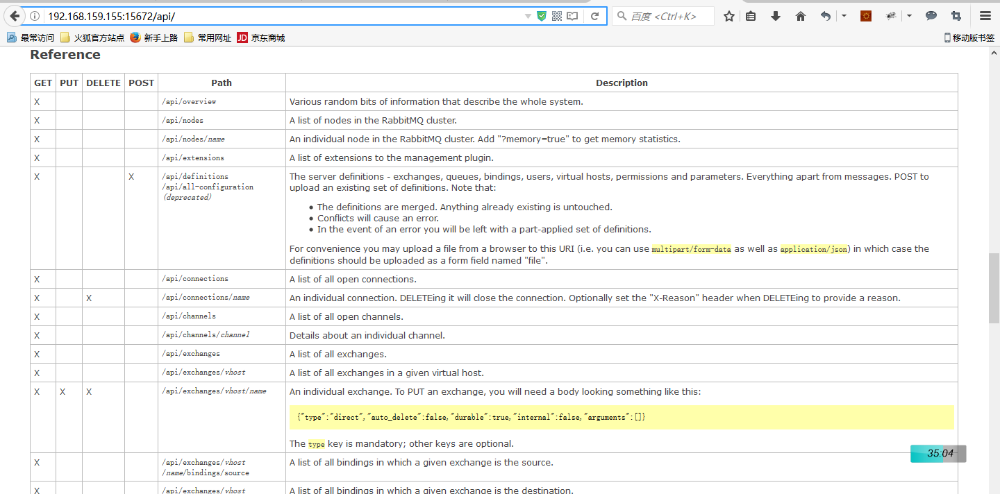

10. horizon集成rabbitmq监控¶
10.1. 开启rabbitmq web监控¶
部署好云平台后，rabbitmq服务也已经成功安装，我们可以启用插件式开启rabbitmq web ui监控！
rabbitmq-plugins enable rabbitmq_management
# 查看rabbitmq启用的插件！
rabbitmq-plugins list
# 重启rabbitmq服务
service rabbitmq-server restart
rabbitmq web ui监听的是15672端口，我们可以直接在浏览器中输入http://localhost:15672进行访问。 然后输入rabbitmq用户名和密码，就可以看到rabbitmq web管理界面了。
注意：rabbitmq默认的guest/guest用户只能从localhost地址登录，如果要配置远程登录，必须另创建用户

| [1] | http://www.open-open.com/lib/view/open1432468144338.html |
| [2] | http://www.cnblogs.com/qiyebao/p/4201713.html |
10.2. 集成到horizon¶
只需要在horizon某个dashboard中添加panel，然后点击panel链接时，进行url redirect！
可以参考 horizon二次开发指南 ，进行panel添加。然后在view处理函数中， 进行页面重定向！
# rabbitmq_monitor/views.py
from django import shortcuts
from django.views.generic import TemplateView
class IndexView(TemplateView):
template_name = ''
def get(self, request):
url ='http://192.168.159.155:15672'
return shortcuts.redirect(url)
10.2.1. 小问题¶
这里有一个小问题，通过点击panel连接重定向后，rabbitmq web首先要求进行登录认证。 本来我的想法是在重定向时通过rabbitm-user/rabbitmq-passwd发送post请求，后来证明这种方法是错误的。 因为： 重定向访问时根本不能发送POST数据。 [3]
怎么解决这个问题，还没有找到更好的办法！
10.3. rabbitmq http-api¶
开启rabbitmq_management插件后，可以通过http-api的方式，获取rabbitmq状态数据。
以下是通过curl方式获取json格式数据。
root@allinone-v2:/opt/cecgw/csmp# curl -u guest:httc123 -H 'content-type:application/json' http://192.168.159.155:15672/api/nodes | python -m json.tool
% Total % Received % Xferd Average Speed Time Time Time Current
Dload Upload Total Spent Left Speed
100 2384 100 2384 0 0 82383 0 --:--:-- --:--:-- --:--:-- 85142
[
{
"applications": [
{
"description": "RabbitMQ AMQP Client",
"name": "amqp_client",
"version": "3.2.4"
},
{
"description": "INETS CXC 138 49",
"name": "inets",
"version": "5.9.7"
},
......省略数据
至于rabbitmq-management所提供的api，可以通过http://192.168.159.155:15672/api页面进行查看。

{kind=link}
rabbitmq http API列表
10.4. 参考¶
| [3] | 对所谓的django post redirect进行了阐述。网址：http://stackoverflow.com/questions/3024168/django-how-do-i-redirect-a-post-and-pass-on-the-post-data |